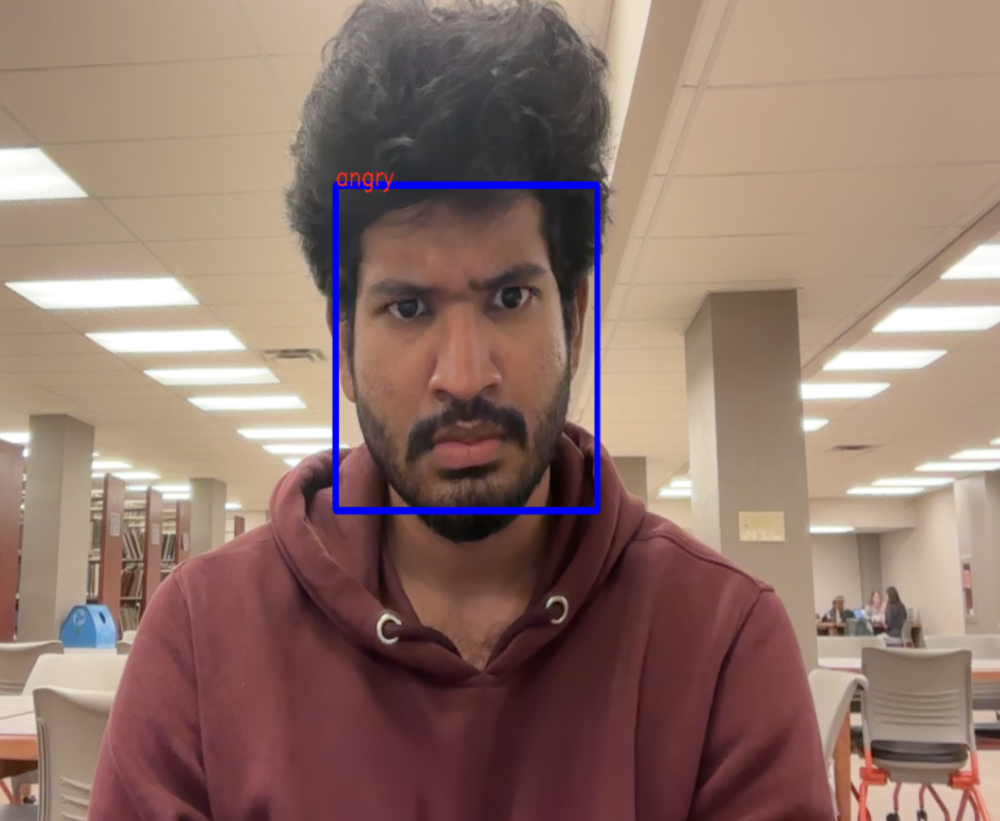
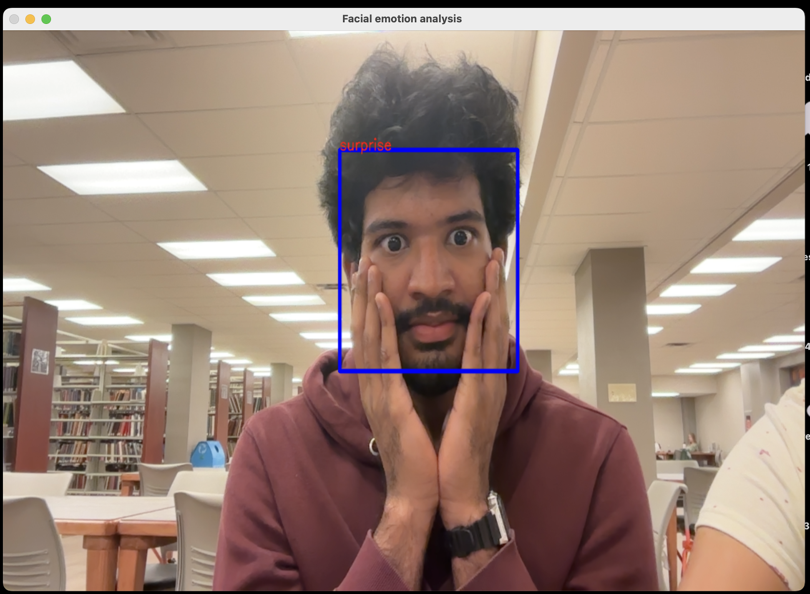
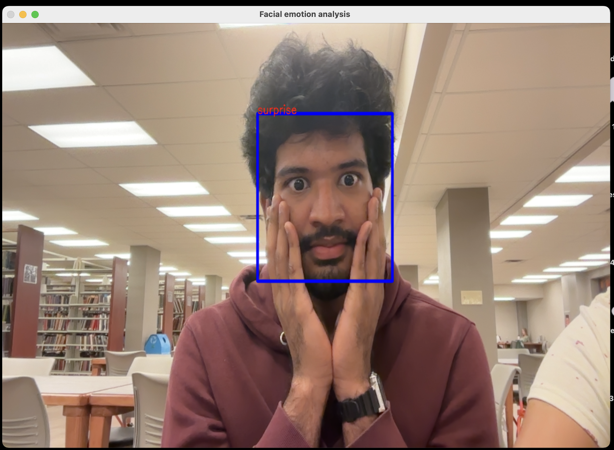
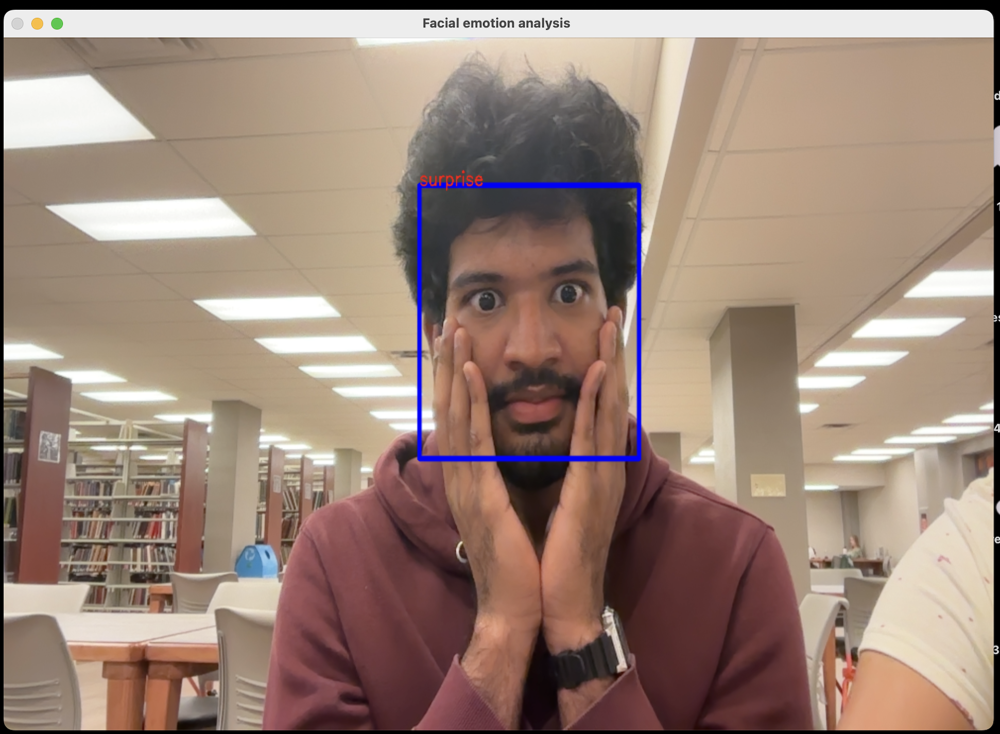

About This Project
This project focuses on real-time facial emotion detection using deep learning. It utilizes a Convolutional Neural Network (CNN) model trained on the FER-2013 dataset to classify emotions such as happy, sad, angry, fear, surprise, disgust, and neutral. The system captures video input from a webcam, detects faces using OpenCV, and then predicts emotions using the trained model.
Key Features
- Real-time webcam integration for facial detection
- Emotion classification using a trained CNN model
- Live bounding box and label overlay on detected faces
- Trained on the FER-2013 dataset with high validation accuracy
Tech Stack
- Python, TensorFlow/Keras
- OpenCV for face detection
- FER-2013 dataset for training
- Jupyter Notebook / Streamlit / Flask (based on your implementation)
Project Screenshots



 

